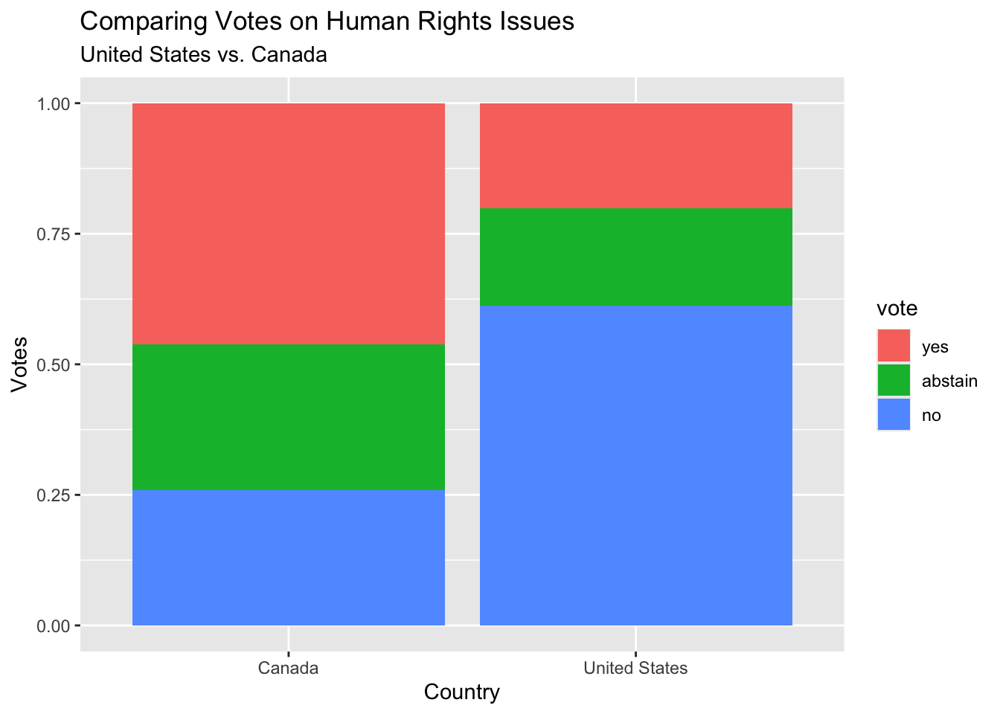

1 + 1[1] 2October 1, 2026
mainTeam name: Team C for “Cool”
Pick one country (check its spelling in the AE01 Appendix) and make a bar chart of its votes. Does it vote yes more often than no?
Make a frequency table of issue. Which issue has the most votes?
Colonialism Arms control and disarmament
129708 170497
Economic development Human rights
108759 156623
Palestinian conflict Nuclear weapons and nuclear material
158656 133635 The issue with the most votes is “Arms Control and Disarmament” with 170497 votes.
For the United States, calculate the proportion of yes votes on each issue. Which issue does it vote yes on the most? The least?
# A tibble: 6 × 3
# Groups: country [1]
country issue percent_yes
<chr> <fct> <dbl>
1 United States Economic development 0.282
2 United States Arms control and disarmament 0.265
3 United States Human rights 0.242
4 United States Nuclear weapons and nuclear material 0.214
5 United States Colonialism 0.150
6 United States Palestinian conflict 0.106It voted yes the most on Economic development (~28.2%) and the least on the Palestinian conflict (~10.6%)
Filter to the United States and Canada on “Human rights”, then make a bar chart with one bar per country, filled by vote (position = "fill"). Do the two countries mostly agree?

No, the United States and Canada do not mostly agree on Human Rights issues. The United States has voted ‘no’ on Human Rights issues more than twice as much as Canada. Canada has also abstained from voting nearly twice as much as the United States. This indicates the two countries are very divided on Human Rights issues and disagree quite often.